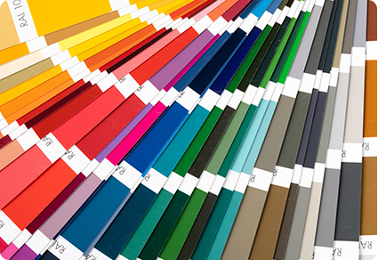
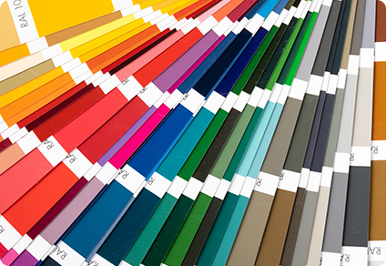

颜色识别
介绍：
基于OpenCV库，采用HSV色域分割提取目标颜色，并基于一些形状特征来实现颜色识别。相对于RGB空间，HSV空间能够非常直观的表达色彩的明暗，色调，以及鲜艳程度。方便进行颜色之间的对比。opencv中的HSV范围，H是0-180，S是0-255，V是0-255。

介绍：
基于OpenCV库，采用HSV色域分割提取目标颜色，并基于一些形状特征来实现颜色识别。相对于RGB空间，HSV空间能够非常直观的表达色彩的明暗，色调，以及鲜艳程度。方便进行颜色之间的对比。opencv中的HSV范围，H是0-180，S是0-255，V是0-255。
